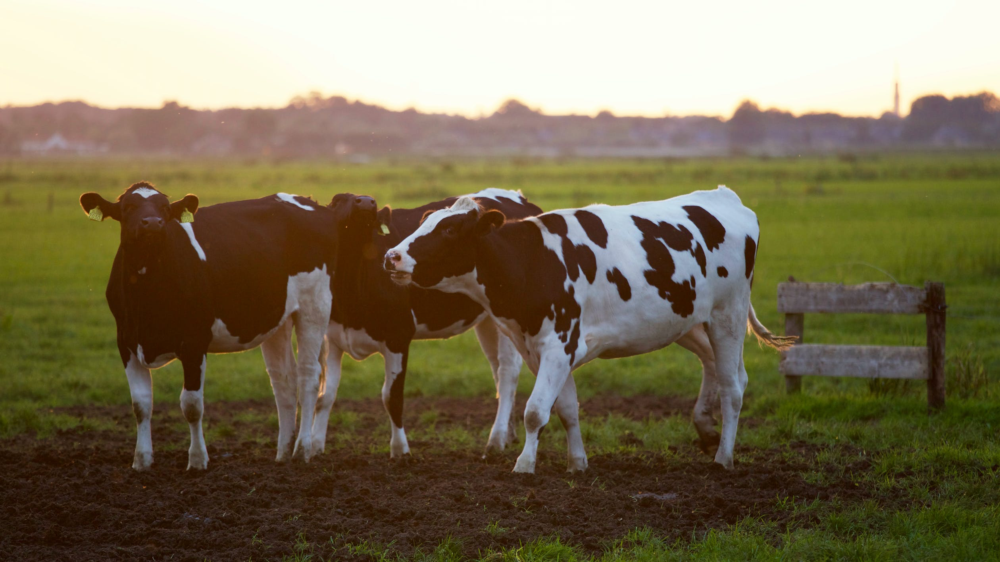
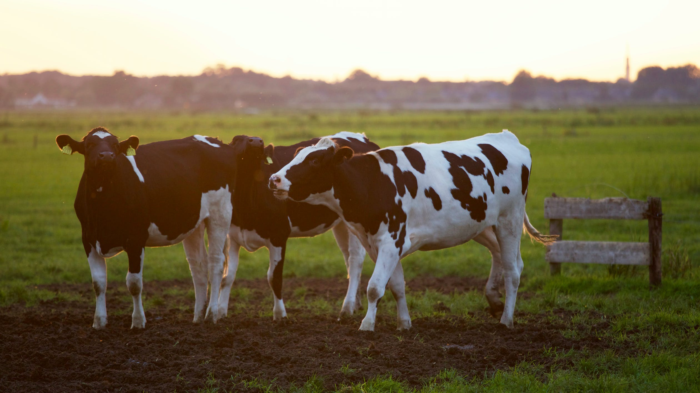
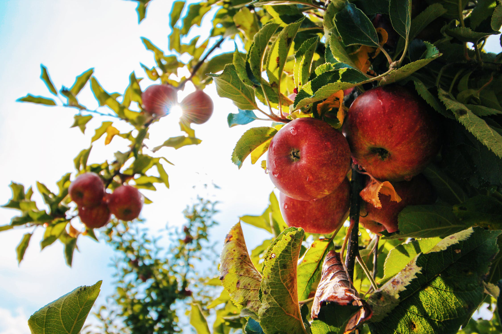

OVER ONS
De huidige situatie van de wereld vraagt om verandering. In tijden van klimaatveranderingen en pandemieën is sterk naar voren gekomen dat verspilling en eindeloos consumeren niet houdbaar is. De gevolgen van de huidige crisis leidt ertoe dat boeren met gigantische overschotten aan producten blijven zitten. Prachtige producten, die onnodig verspild worden. Boer naar Burger biedt een platform voor deze boeren, om hun producten alsnog aan de man te brengen.
 


Boer naar Burger brengt consument en boer met elkaar in contact. Samen staan we sterk! Meld je aan op ons platform en ontvang de heerlijkste verse streekproducten, direct van de oorsprong. Geen extra bewerking, onbekende handelingen. Gewoon eerlijke en pure producten. Dat is de kracht van Boer naar Burger.
Ons Concept
Boer naar Burger biedt een platform waarop producten aangeboden worden,
die in de huidige maatschappij verloren gaan. Denk hierbij aan de kromme
komkommers, (te) kleine tomaten of paprika’s die net niet volledig egaal
rood geworden zijn. Deze producten hebben geen recht van bestaan in de
supermarkt, omdat ze niet aan de kwaliteitseisen voldoen. Dit zijn echter prima
producten, waar qua smaak en voedzaamheid niets mis mee is.
Wij helpen de boer!
Door deze producten op te kopen helpen wij boeren van hun overproductie af, en ondersteunen wij onze medemens in moeilijkere tijden. Daarnaast bieden wij consumenten, producten met een verhaal; (h)eerlijk en betrouwbaar.
Onze Missie
Boer naar Burger richt zich op de bewuste consument, die supermarkt moe is. Daarnaast proberen wij boeren van overproductie af te helpen, bijvoorbeeld paprika’s die niet in de supermarkt terecht komen omdat ze enkele millimeters te klein zijn en hierdoor niet aan de kwaliteitseisen voldoen. Daarnaast blijven boeren momenteel met enorme hoeveelheden voedsel zitten, ten tijde van de corona crisis. Boer naar Burger brengt deze producten naar de consument, voor een eerlijke prijs. Ons bedrijf is er voor de boeren, en haar consumenten.
Onze Visie
Bij Boer naar Burger geloven we in een toekomst zonder verspilling, waar al
het voedsel waarde heeft. De tijd van de perfect gevormde komkommer, de
houdbaarheidsdatum en het eindeloos consumeren is voorbij. Als er ook maar
één ding naar voren is gekomen in de tijden van klimaatverandering en covid-19,
is dat wel; de moderne wereld vraagt om verandering. Ons streven is een wereld
zonder verspilling – een einde aan de consumptiemaatschappij.
Tegen Verspilling
Tonnen aan vers en heerlijk voedsel worden dagelijks weggegooid; groenten en fruit die niet aan de kwaliteitseis voldoen of overproductie die de boer niet kwijt kan. Boer naar Burger geeft deze producten een nieuw doel, een reden van bestaan. We zijn volledig open over de volledige productie keten en bieden transparantie en vertrouwen. ‘Onze’ boeren, delen onze kernwaarden.